Hola!
Bienvenido/a por estos lados. Si ya has leído post anteriores, muchas gracias por volver. Si es tu primera, espero que te sea útil e interesante.
Hoy te traigo un tutorial que creo te va a interesar… usaremos modelos de inteligencia artificial de aprendizaje supervisado para predecir algunas cosas.
Pero…
Usando una hoja de cálculo de Google. Si, ese que se parece a Excel. Y solo con unos clics.
Te sorprenderás! Serás capaz de usar por ti mismo/a un modelo de inteligencia artificial con tus datos e increiblemente simple. Sigue leyendo. Te voy a explicar paso a paso cómo usarlo y, a grandes rasgos, cómo interpretarlo.
¿Qué es la inteligencia artificial?
La inteligencia artificial (IA) es una tecnología que permite a las máquinas imitar el comportamiento inteligente de los humanos. Esto significa que las máquinas con IA pueden hacer cosas que normalmente requerirían inteligencia humana, como reconocer patrones, aprender de experiencias pasadas y tomar decisiones basadas en información.
Hay diferentes tipos de IA, pero en general, todos trabajan utilizando algoritmos y datos para “enseñar” a las máquinas a hacer cosas de manera más eficiente y precisa. Por ejemplo, una máquina con IA puede analizar grandes cantidades de información médica para ayudar a los médicos a diagnosticar enfermedades, o puede ayudar a una empresa a predecir qué productos serán más populares en el futuro.
La IA es una tecnología muy útil y puede ayudarnos a hacer muchas cosas más eficientes y rápidas, pero también es importante recordar que es solo una herramienta y no puede reemplazar completamente a la inteligencia humana. Además, es importante utilizar la IA de manera responsable y ética para asegurarnos de que está beneficiando a la humanidad en lugar de causar problemas.
En el campo de la inteligencia artificial (IA), existen diferentes tipos de aprendizaje automático. Algunos de los tipos más comunes incluyen:
Aprendizaje supervisado.
Aprendizaje no supervisado.
Aprendizaje por refuerzo.
El modelo de IA que vamos a usar en este tutorial es de aprendizaje supervisado.
El aprendizaje supervisado es un tipo de aprendizaje automático en el que una máquina o modelo de aprendizaje automático es entrenado con un conjunto de datos etiquetados previamente. Los datos etiquetados incluyen un conjunto de entradas (también conocidas como características) y una etiqueta de salida (también conocida como la clase o el objetivo). La máquina utiliza estos datos para aprender a predecir la etiqueta de salida para nuevas entradas.
Por ejemplo, si estamos entrenando un modelo de aprendizaje automático para reconocer rostros, podríamos proporcionarle un conjunto de imágenes de rostros etiquetadas con el nombre de la persona en cada imagen. El modelo utilizaría estos datos para aprender a reconocer rostros y predecir el nombre de la persona en nuevas imágenes.
El aprendizaje supervisado es un tipo de aprendizaje automático muy común y es utilizado en una amplia variedad de aplicaciones, como la clasificación de correos electrónicos como spam o no spam, la detección de fraudes en transacciones financieras y la predicción del precio de una propiedad. Es una forma efectiva de aprender a partir de datos etiquetados, pero requiere un conjunto de datos etiquetado previamente y puede no ser tan efectivo cuando el conjunto de datos no está bien equilibrado o no está completamente limpio.
Ok… Ya con estos conceptos generales en mente, avancemos en el tema. Iremos paso a paso.
Para efectos de demostración, usaré los mismos datos de ejemplo que proporciona Google. Ah! Lo mencioné, pero no lo expliqué. Usarmos TensorFlow de Google.
¿Qué es TensorFlow?
TensorFlow es una biblioteca de software de código abierto para el aprendizaje automático y el cálculo numérico. Fue desarrollada por Google y se utiliza ampliamente en la industria y en la investigación para construir y entrenar modelos de aprendizaje automático.
Es muy flexible y se puede utilizar para construir y entrenar una amplia variedad de modelos de aprendizaje automático, desde redes neuronales simples hasta modelos más complejos como redes neuronales profundas. También es muy escalable y se puede utilizar en una amplia gama de plataformas, desde computadoras personales hasta servidores de alta escala y dispositivos móviles.
TensorFlow es ampliamente utilizado en muchas áreas, como la visión por computadora, el procesamiento del lenguaje natural, la detección de fraudes y la predicción del precio de las acciones. Es una de las bibliotecas de aprendizaje automático más populares y ampliamente utilizadas en la industria y en la investigación.
Perfecto.
Instalar plugin
Para los efectos del tutorial, debemos instalar una extensión de Google Sheets para poder usar TensorFlow en ella. Para eso, tenemos que ir al Marketplace de Google e instalar el plugin Simple ML for Sheets.
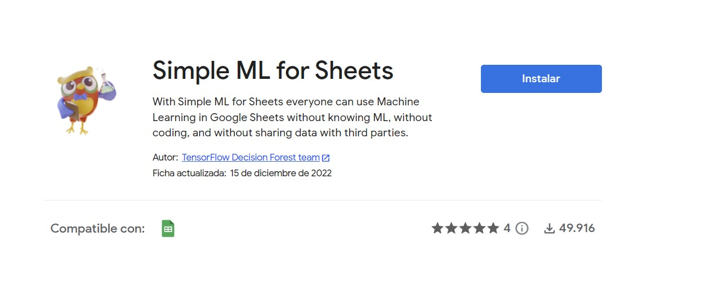
Bueno, no lo mencioné, pero debes tener una cuenta de Google y haber iniciado la sesión antes de instalar este plugin.
Veamos los datos
Usaremos los datos que nos proporciona Google.
Anda a este link y cópiate la plantilla de Google Sheets.
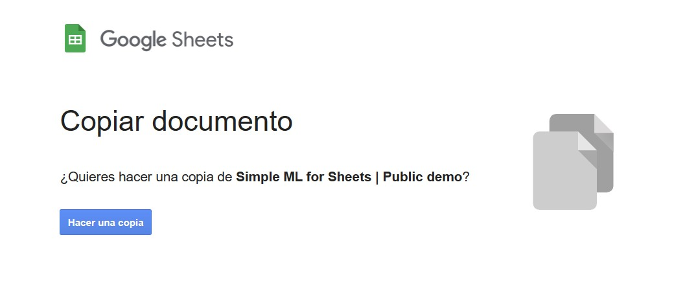
Esta plantilla tiene 4 datasets o conjuntos de datos precargados. Para nuestro tutorial, usaremos el de lo pingüinos, que es el caso 1. Este sirve para mostrar el uso de TensorFLow para completar los datos faltantes aplicando algunos modelos de predicción.
Los datos mostrados corresponden a una serie de mediciones de los pingüinos como el largo del pico, peso, largo de sus aletas y sexo. Esto, para 3 tipos de especies de pingúinos de la Antártica: Chinstrap, Gentoo y Adelie.
Seguramente si ya tienes algo de experiencia en programación, este dataset te suene. Pues si, es uno de los clásicos que se usa para enseñar distintos modelos de ML.
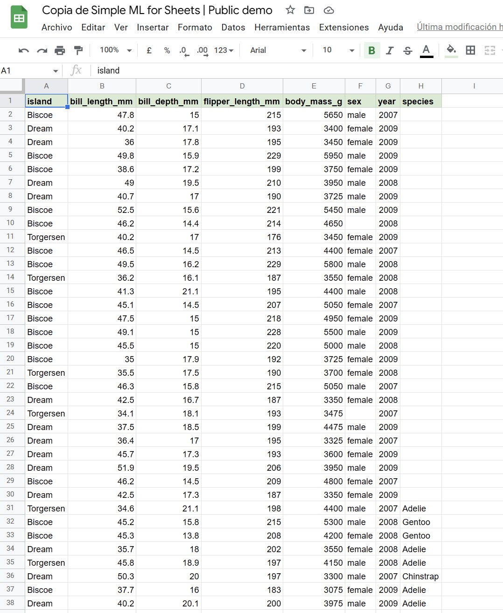
Ok. Con el plugin ya instalado y los datos ya disponibles, veamos algo…
Fíjate que las primeras 30 filas no contiene datos de la especie del pingüino. Esos espacios en blanco (o datos faltantes) son los que por medio de un modelo de ML trataremos de predecir cuál debería ir en cada caso.
Hagamos la predicción
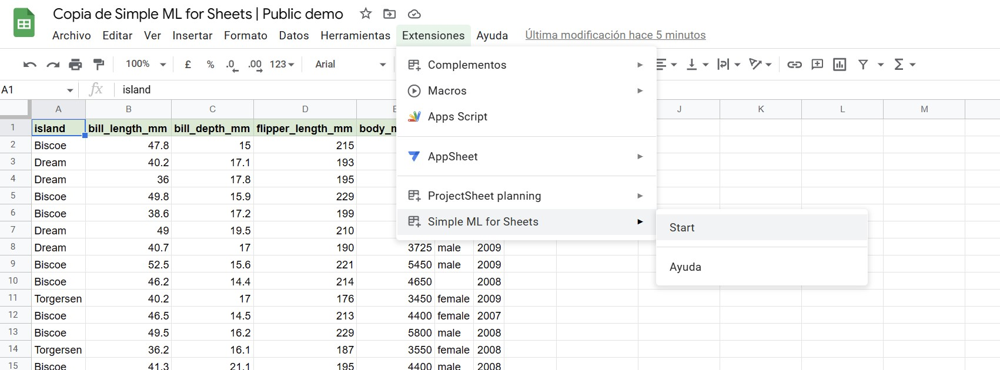
En la pestaña de arriba, vamos a Extensiones, luego a Simple ML for Sheets y hacemos clic en Start.
Se abrirá una pequeña ventana a la derecha de la planilla.
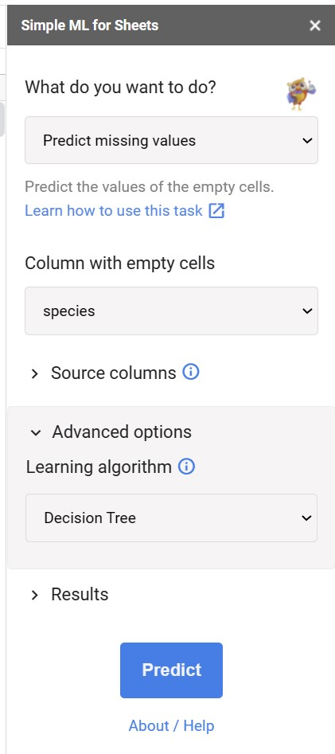
Fíjate en un par de cosas…
Haremos una predicción de los datos faltantes. Si haces clic en el listado te saldrán varias opciones. Por ahora usaremos la primera: Predict missing values.
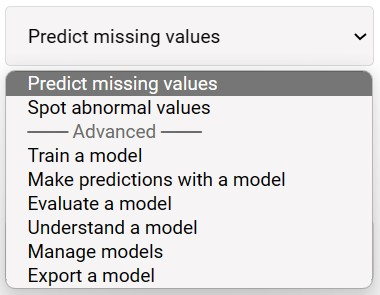
Luego, nos aseguramos que la columna indicada es la de Species, que es donde están los datos vacíos.
En la parte de Souce columns podemos ver el tipo de datos de cada columna del set de datos.
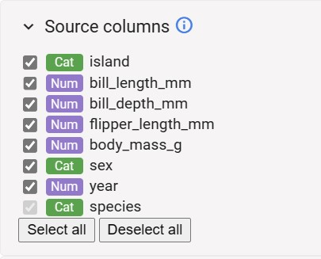
Cat corresponde a datos categóricos y Num a datos numéricos.
Nuestros datos a predecir son categóricos. Este detalle es importante a la hora de diseñar modelos de aprendizaje automáticos, pero eso se escapa de este tutorial, así que no lo veremos acá por ahora.
En la siguiente opción podemos especificar el modeloo algoritmo de ML que usaremos. Para este tutorial vamos a usar un Decision Tree.
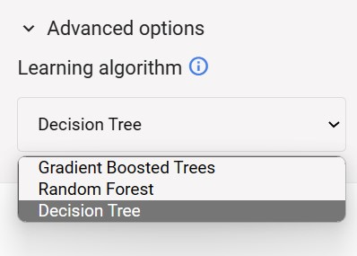
Usaremos ese modelo, pues es uno de los más simples de entender, es fácil de graficar y de explicar. Tiene limitaciones y muchas veces hay modelos más útiles y con mejor desempeño, pero para partir está ok.
Una vez ya seleccionadas todas esas opciones, apreta el botón Predict.
Luego de unos segundos, en la plantilla se van crear 2 columnas: una con los valores de la predicción (donde están vacios) y otra con un porcentaje (llamada Pred:Conf.species). Esta columna indica qué tan “seguro” está el modelo sobre el predicciones en la columna Pred:species. Este valor va de 0% a 100%. Como este es un modelo de clasificación, esta métrica corresponde al Accuracy.
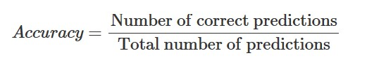
A continuación te muestro los valores que me arrojaron a mi. Ojo, que esas cifras podrían variar en tu caso.
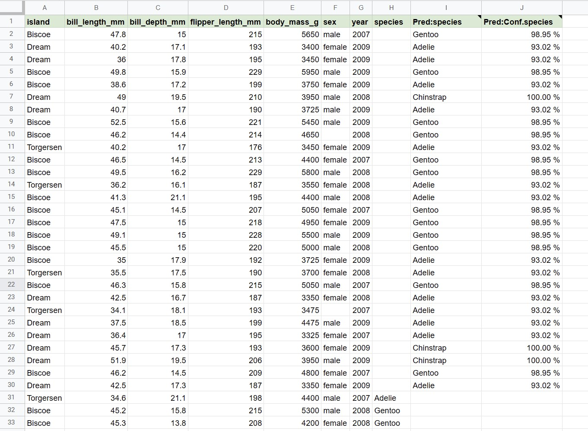
Nota que aún cuando el modelo que usamos en de los más simples, sus resultados son bastante buenos.
Un detalle relevante es que esa capacidad de predicción y accuracy se basa en los datos de entrenamiento. Es decir, el modelo se entrena con un determinado numero de datos y luego aplica el modelo sobre dato que no ha visto. Para ello, hay diversas técnicas para mejorar el poder predictivo de los algoritmos y es, también, uno de los pasos más importantes en el diseño e implementación de modelos de ML. Hay, además, modelos pre-entrenados. Es decir, que alguien ya los entrenó, habotualmente con miles o millones de datos y que los puedes usar con determinados ajustes. Pero de eso, no hablaremos ahora.
Explicando el modelo
Ya, ok. Todo muy lindo. Pero esto parece magia. O sea, selecciono un par de cosas, apreto un botón y me dice los valores que faltan.
Bueno, eso es algo que no debe pasar o que de alguna forma, debemos reducir. La caja negra que está detrás de los modelos de ML puede ser muy simple de entender o imposible definitivamente. El tema de la explicabilidad y transparencia algorítmica es un área de estudio muy relevante en el uso ético de datos, más aún cuando cada día más el uso de IA está más extenso y de fácil acceso.
Este es un tutorial nada más, pero todo este tema es algo que jamás debemos pasar por alto. Mucho menos en salud o en la toma de decisiones de política pública. Dicho eso, sigamos…
El plugin de TensorFlow tiene algunas opciones para explicar el modelo y sus resultados.
A ver, no es tan configurable como uno podría hacerlo programando el modelo, pero me parece interesante que incluya este tipo de cosas.
Veamos…
En la primera parte, ahora seleccionamos Understand a model:
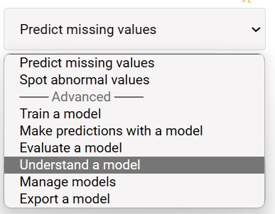
Luego, en la sección de Model, elegimos el modelo para “explicar”. Los modelos se guardan con la fecha y hora en que fueron ejecutadoscpor defecto. Si es el primero que haces, bueno, solo tendrás 1 opción para seleccionar. Si has hecho varias, fíjate bien cuál seleccionas.
Hay una opción de cambiar el nombre al modelo para que se más simple saber cuál es cuál. Para ello, anda a Manage models y renombra los que desees. También puedes eliminar los que ya no necesites.
Marca la opción de Include sheet data y dale al botón de Understand.
Se abrirá una ventana con variada información.
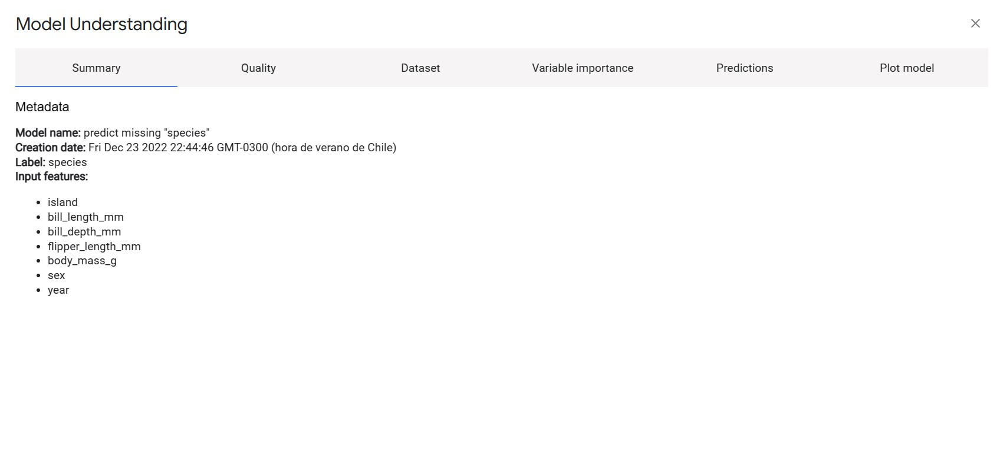
No todas las pestañas contienen información, pues depende del modelo que hayamos usado.
Veamos la importancia de las variables.
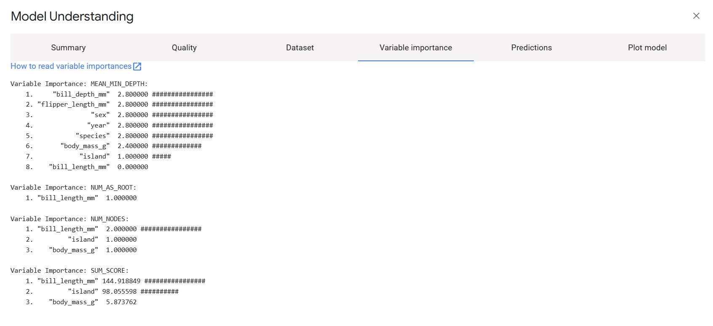
La importancia de las variables permite analizar qué tanto influye una variable (entiende eso como las columnas del set de datos) para predecir, en nuestro caso, la especie del pingüino.
Fíjate en la última sección: SUM_SCORE
Variable Importance: SUM_SCORE:
1. "bill_length_mm" 144.918849 ################
2. "island" 98.055598 ##########
3. "body_mass_g" 5.873762 Para predecir la especie, el modelo usa principalmente esas 3 variables, pero fundamentalmente el largo del pico (bill_length_mm), pues obtiene un puntaje mayor. La isla también parece ser importante para determinar la especie.
Si usas otros modelos, te van a aparecer muchas otras más métricas. Si quieres ver qué significan, puedes visitar su documentación oficial.
La última pestaña corresponde a un gráfico del modelo (plot).

Ok… no es el gráfico más lindo del mundo jajajja 😅
Ya, pero lo que trata de mostrar el el camino que siguió para tomar la decisión de clasificación de las especies. Son las reglas que se usaron, finalmente,
Tree #0:
"bill_length_mm">=43.15 [s:0.493991 n:281 np:152 miss:1] ; val:"Adelie" prob:[0.44484, 0.359431, 0.19573]
├─(pos)─ "island" is in [BITMAP] {Dream, Torgersen} [s:0.645103 n:152 np:57 miss:0] ; val:"Gentoo" prob:[0.0328947, 0.618421, 0.348684]
| ├─(pos)─ "bill_length_mm">=46.05 [s:0.107149 n:57 np:43 miss:0] ; val:"Chinstrap" prob:[0.0701754, 0, 0.929825]
| | ├─(pos)─ val:"Chinstrap" prob:[0, 0, 1]
| | └─(neg)─ "body_mass_g">=3975 [s:0.419554 n:14 np:5 miss:1] ; val:"Chinstrap" prob:[0.285714, 0, 0.714286]
| | ├─(pos)─ val:"Adelie" prob:[0.8, 0, 0.2]
| | └─(neg)─ val:"Chinstrap" prob:[0, 0, 1]
| └─(neg)─ val:"Gentoo" prob:[0.0105263, 0.989474, 0]
└─(neg)─ val:"Adelie" prob:[0.930233, 0.0542636, 0.0155039]¿Recuerdas que era el largo del pico la variable más importante?
Bueno, fíjate que acá está al inicio del árbol, pues es la que permite una mayor discriminación de especies. Por ejemplo, si el largo del pico es menor de 43.14 mm con un 93% de probabilidades la especie es Adelie. Debes seguir el camino.
Usemos el modelo
Hasta ahora todo bien. Pero una de las gracias es poder usar el modelo con nuevos datos y predecir, en este caso, la especie.
Acá es relevante que el modelo que usemos haya tenido buenos resultados y nos de cierta seguridad de que va a predecir bien.
En la plantilla, crea una nueva hoja en blanco y pone algunos datos de pingüinos en las variables, dejando el de la especie en blanco. Los datos te los puedes inventar siquieres, pero ten ojo con no poner cosas muy extrañas, de lo contrario, los resultados serán cualquier cosa, pues no son coherentes. O sea, poner un peso de 10.000 gramos es como extramo por ejemplo. Imagina que la idea de este ejemplo es que tienes datos de unos pingüinos y quieres saber su especie. Son datos que deben estar dentro de cierta lógica.
Una vez que tengas los datos en la nueva hoja (asegúrate que los nombres las columnas sean iguales a las originales), seleccionamos la opcion de Make predictions with a model:
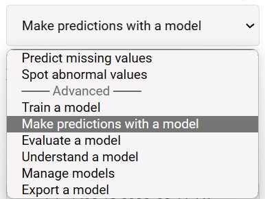
Luego, elegimos el modelo que usaremos para esas predicciones. Es el mismo que teníamos antes o uno nuevo si es es que hiciste más pruebas.
Dale al botón Predict.
Al igual que antes, se crearán 2 columnas, una con la especia predicha y otra con el porcentaje de confianza que habíamos visto antes.
Estos son mis resultados:
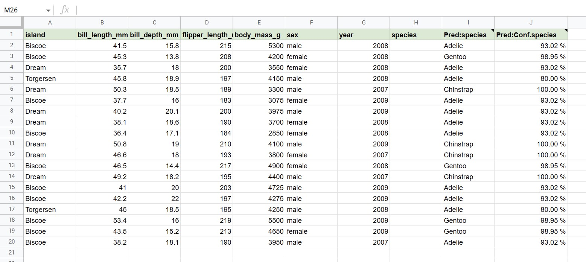
Hay más opciones como guardar el modelo para poder usarlo después o poder usar otros modelos de clasificación como Random Forest o Gradient Boosted Trees.
Prueba alguno de ellos y ve que te resulta.
Investiga cómo usarlo con tus propios datos. Ten en mente que deberás entrenar el algoritmo primero antes de usar el modelo. Dale una vuelta para que veas cómo se hace. Igual, hago otro tutorial al respecto más adelante.
Conclusiones
La inteligencia artificial está cada día más presente en nuestras vidas, aunque no nos demos cuenta. Por eso es importante entenderla.
Este tutorial busca acercar la IA a las personas que lo ven muy lejano o que no saben programar este tipo de cosas. Pero ojo, como te mencioné antes, debe usarse con responsabilidad y sentido ético. Este ejmplo de los pingüinos es entretenido, pero otra cosa es clasificar a personas para decidir si van a recibir un beneficio social o si son atendidos en la urgencia. Ve este tutorial como lo que es, un ejemplo que de cada día la IA está más cerca. Y que se nos abre todo un mundo por delante. Posiblemente en algún tiempo más (no mucho) una de las competencias más buscadas será la de saber aplicar modelos de ML en distintas plataformas e integrarlas, más que saber escribir código propiamente tal. Eso si, demandará mayor niveles de conocimientos, manejo ético de datos y entender en profundidad los que estamos haciendo.
Ah!!! No te dije algo importante 😁
La primera parte de este artículo fue escrita casi totalmente por chatGPT, una inteligencia artificial que fue entrenada para mantener conversaciones naturales.